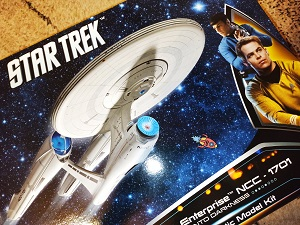

Wpis 1: CONTENT IS THE KING
Strona internetowa składa się z 4 podstawowych warst. Najważniejszą z nich jest treść.
- Java Script
- CSS
- HTML
- Treść
Cześć Wam wszystkim :) To już moje drugie podejście do tego szkolenia/kursu/programu. Nie potrzebne skreślić :)
Wtedy odpuściłem sobie na jednej z początkowych lekcji. Tym razem będzie inaczej ! Chciałbym tutaj opisywac moje postępy
w pracach nad stroną oraz wrzucać zdjęcia z rowerowych wycieczek, bo lubię się gdzieś czasem poszwędać. Ale o tym już na kolejnej podstronie:)
Byłbym zapomniał, mam zamiar zbudować swojego U.S.S. Enterprise.

Strona internetowa składa się z 4 podstawowych warst. Najważniejszą z nich jest treść.